MySQL复杂查询、DCL、约束、表关系
回顾
能够使用SQL语句建库、建表
建库: CREATE DATABASE 数据库名;
建表: CREATE TABLE 表名 (字段名1 字段类型1, 字段名2 字段类型2);
能够使用SQL语句进行数据的添删改查操作
增: INSERT INTO 表名 (字段名1, 字段名2, …) VALUES (值1, 值2, …);
删: DELETE FROM 表名;
改: UPDATE 表名 SET 字段名1=值1, 字段名2=值2;
查: SELECT * FROM 表名;
能够使用SQL语句进行排序
SELECT * FROM 表名 ORDER BY 字段名 [ASC|DESC];
默认是升序
学习目标
- 能够使用SQL语句添加主键、外键、唯一、非空约束
- 能够使用聚合函数
- 能够使用SQL语句进行分组查询
- 能够理解三大范式
DQL查询语句-聚合函数(重要)
目标
学习五个聚合函数的使用
讲解
之前我们做的查询都是横向查询，它们都是根据条件一行一行的进行判断，而使用聚合函数查询是纵向查询，它是对一列的值进行计算，然后返回一个结果值。另外聚合函数会忽略空值NULL。
五个聚合函数：COUNT： 统计指定列记录数，记录为NULL的不统计SUM： 计算指定列的数值和，如果不是数值类型，那么计算结果为0MAX： 计算指定列的最大值MIN： 计算指定列的最小值AVG： 计算指定列的平均值 average
聚合函数的使用：写在 SQL语句SELECT后 字段名的地方
SELECT 字段名 FROM 表名;
SELECT 聚合函数(字段名) FROM 表名;具体操作：
- 查询学生总数
SELECT COUNT(english) FROM student3;
我们发现对于NULL的记录不会统计
统计数量常用:
SELECT COUNT(*) FROM student3;
- 查询年龄大于40的总数
SELECT COUNT(*) FROM student3 WHERE age>40;
- 查询数学成绩总分
SELECT SUM(math) FROM student3;
- 查询数学成绩最高分
SELECT MAX(math) FROM student3;
- 查询数学成绩最低分
SELECT MIN(math) FROM student3;
- 查询数学成绩平均分
SELECT AVG(math) FROM student3;
小结
聚合函数是以列为单位操作
| 函数 | 作用 |
|---|---|
| SUM(列名) | 求这列的总和 |
| COUNT(列名) | 求这列的总数量 |
| MAX(列名) | 求这列的最大值 |
| MIN(列名) | 求这列的最小值 |
| AVG(列名) | 求这列的平均值 |
DQL查询语句-分组(重要)
目标
学习对查询后的结果进行分组

讲解
分组查询是指使用 GROUP BY语句对查询信息进行分组
SELECT * FROM 表名 GROUP BY 字段名;GROUP BY原理:
将分组字段结果中相同内容作为一组
SELECT * FROM student3 GROUP BY sex;这句话会将sex相同的数据作为一组
GROUP BY将分组字段的相同值作为一组，并且返回每组的第一条数据，所以单独分组没什么用处。分组的目的就是为了统计，一般分组会跟聚合函数一起使用。
分组后聚合函数的作用？不是操作所有数据，而是分别操作每组数据。
SELECT SUM(math), sex FROM student3 GROUP BY sex;效果如下：
实际上是将每组的math进行求和，返回每组统计的结果
注意事项：当我们使用某个字段分组,在查询的时候也需要将这个字段查询出来,否则看不到数据属于哪组的
- 查询的时候没有查询出分组字段
- 查询的时候查询出分组字段


具体步骤：
- 按性别分组
SELECT sex FROM student3 GROUP BY sex;
- 查询男女各多少人
1.查询所有数据,按性别分组
2.统计每组人数
SELECT sex, COUNT(*) FROM student3 GROUP BY sex;
- 查询年龄大于25岁的人,按性别分组,统计每组的人数
1.先过滤掉年龄小于25岁的人
2.再分组
3.最后统计每组的人数
SELECT sex, COUNT(*) FROM student3 WHERE age > 25 GROUP BY sex;
查询年龄大于25岁的人,按性别分组,统计每组的人数,并只显示性别人数大于2的数据
有很多同学可能会将SQL语句写出这样:SELECT sex, COUNT(*) FROM student3 WHERE age > 25 GROUP BY sex WHERE COUNT(*) >2;注意: 并只显示性别人数>2的数据属于分组后的条件,对于分组后的条件需要使用
having子句
SELECT sex, COUNT(*) FROM student3 WHERE age > 25 GROUP BY sex HAVING COUNT(*) >2;
只有分组后人数大于2的`男`这组数据显示出来
having与where的区别
- having是在分组后对数据进行过滤
- where是在分组前对数据进行过滤
- having后面可以使用聚合函数
- where后面不可以使用聚合函数
小结
分组的语法格式？
SELECT 字段名 FROM 表名 GROUP BY 字段名;
分组的原理？
将字段值相同的数据作为一组,并且返回每组的第一条数据 通常分组和聚合函数组合使用
- where和having的区别？
- having是在分组后对数据进行过滤
- where是在分组前对数据进行过滤
- having后面可以使用聚合函数
- where后面不可以使用聚合函数DQL查询语句-LIMIT语句(重要)
目标
能够掌握limit语句的使用
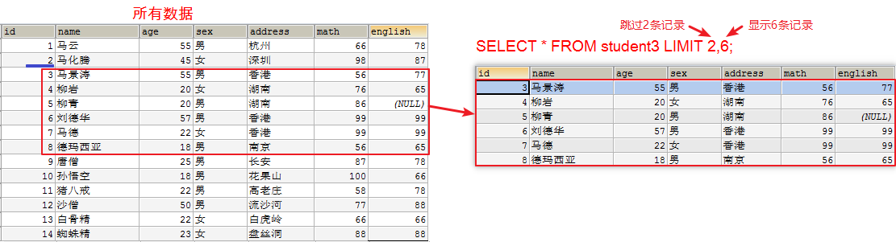
准备数据
INSERT INTO student3(id,NAME,age,sex,address,math,english) VALUES
(9,'唐僧',25,'男','长安',87,78),
(10,'孙悟空',18,'男','花果山',100,66),
(11,'猪八戒',22,'男','高老庄',58,78),
(12,'沙僧',50,'男','流沙河',77,88),
(13,'白骨精',22,'女','白虎岭',66,66),
(14,'蜘蛛精',23,'女','盘丝洞',88,88);LIMIT是限制的意思，所以LIMIT的作用就是限制查询记录的条数。
LIMIT语句格式
SELECT * FROM 表名 LIMIT offset, length;offset是指偏移量，可以认为是跳过的记录数量，不写则默认为0。length是指需要显示的总记录数
具体步骤：
查询学生表中数据，跳过前面2条，显示6条
我们可以认为跳过前面2条，取6条数据 SELECT * FROM student3 LIMIT 2,6;
LIMIT的使用场景
分页
比如我们登录京东，淘宝，返回的商品信息可能有几万条，不是一次全部显示出来。是一页显示固定的条数。假设我们一每页显示5条记录的方式来分页。
假设我们一每页显示5条记录的方式来分页，SQL语句如下：
-- 每页显示5条
-- 第一页： LIMIT 0,5; 跳过0条，显示5条
-- 第二页： LIMIT 5,5; 跳过5条，显示5条
-- 第三页： LIMIT 10,5; 跳过10条，显示5条
SELECT * FROM student3 LIMIT 0,5;
SELECT * FROM student3 LIMIT 5,5;
SELECT * FROM student3 LIMIT 10,5;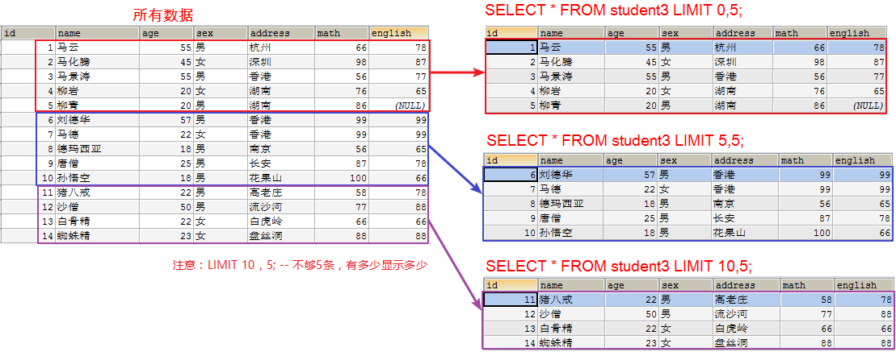
注意：
- 如果第一个参数是0可以简写：
SELECT * FROM student3 LIMIT 0,5;SELECT * FROM student3 LIMIT 5;- LIMIT 10，5; – 不够5条，有多少显示多少
小结
LIMIT语句的使用格式？
SELECT * FROM 表名 LIMIT 跳过的条数, 显示的条数;```sql
SELECT 字段名 FROM 表名 WHERE 条件 GROUP BY 分组列名 HAVING 条件 ORDER BY 排序列名 LIMIT 跳过行数, 返回行数; ## DCL创建用户，给用户授权，撤销授权(了解) ### 目标 学习DCL创建用户，给用户授权，撤销授权 我们现在默认使用的都是root用户，超级管理员，拥有全部的权限。但是，一个公司里面的数据库服务器上面可能同时运行着很多个项目的数据库。所以，我们应该可以根据不同的项目建立不同的用户，分配不同的权限来管理和维护数据库。  #### 创建用户 ```sql CREATE USER '用户名'@'主机名' IDENTIFIED BY '密码';
关键字说明：
1.`用户名`：将创建的用户名
2.`主机名`：指定该用户在哪个主机上可以登陆，如果是本地用户可用localhost，如果想让该用户可以从任意远程主机登陆，可以使用通配符%
3.`密码`：该用户的登陆密码，密码可以为空，如果为空则该用户可以不需要密码登陆服务器具体操作：
-- user1用户只能在localhost这个IP登录mysql服务器
CREATE USER 'user1'@'localhost' IDENTIFIED BY '123';
-- user2用户可以在任何电脑上登录mysql服务器
CREATE USER 'user2'@'%' IDENTIFIED BY '123';授权用户
用户创建之后，基本没什么权限！需要给用户授权
授权格式
GRANT 权限1, 权限2... ON 数据库名.表名 TO '用户名'@'主机名';关键字说明
1.`GRANT` 授权关键字
2.授予用户的权限，如`SELECT`，`INSERT`，`UPDATE`等。如果要授予所的权限则使用`ALL`
3.`数据库名.表名`：该用户可以操作哪个数据库的哪些表。如果要授予该用户对所有数据库和表的相应操作权限则可用*表示，如`*.*`
4.`'用户名'@'主机名'`: 给哪个用户授权具体操作
给user1用户分配对test这个数据库操作的权限
GRANT CREATE,ALTER,DROP,INSERT,UPDATE,DELETE,SELECT ON test.* TO 'user1'@'localhost';
给user2用户分配对所有数据库操作的权限
GRANT ALL ON *.* TO 'user2'@'%';
撤销授权
REVOKE 权限1, 权限2... ON 数据库名.表名 FROM '用户名'@'主机名';具体操作：
撤销user1用户对test操作的权限
REVOKE ALL ON test.* FROM 'user1'@'localhost';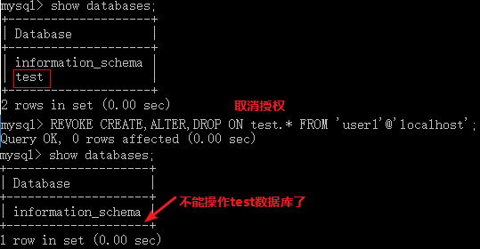
查看权限
SHOW GRANTS FOR '用户名'@'主机名';具体操作：
查看user1用户的权限
SHOW GRANTS FOR 'user1'@'localhost';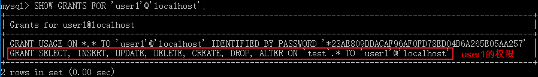
小结
创建用户
CREATE USER '用户名'@'主机名' IDENTIFIED BY '密码'; 主机名: localhost,只能本机登陆, % 可以远程登录添加权限
GRANT 权限1, 权限2, ... ON 数据库名.表名 TO '用户名'@'主机名';删除权限
REVOKE 权限1, 权限2, ... ON 数据库名.表名 FROM '用户名'@'主机名';
DCL删除用户，修改用户密码(了解)
目标
学习DCL删除用户，修改用户密码
删除用户
DROP USER '用户名'@'主机名';具体操作：
删除user2
DROP USER 'user2'@'%';
修改管理员密码
注意：需要在未登陆MySQL的情况下操作。
在DOS命令行:
mysqladmin -uroot -p密码 password 新密码 -- 新密码不需要加上引号具体操作：
mysqladmin -uroot -proot password 123456 
小结
删除用户？
DROP USER '用户名'@'主机名';修改root用户密码？
在DOS命令行未登陆: mysqladmin -uroot -p密码 password 新密码
数据库备份(重要)
目标
- 学习命令行的方式备份和还原表中的数据
- 学习图形客户端来备份和还原数据
备份的应用场景
在服务器进行数据传输、数据存储和数据交换，就有可能产生数据故障。比如发生意外停机或存储介质损坏。这时，如果没有采取数据备份和数据恢复手段与措施，就会导致数据的丢失，造成的损失是无法弥补与估量的。
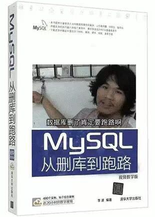
DOS命令行方式备份与还原
备份格式
注意：这个操作不用登录
在DOS命令行:mysqldump -u用户名 -p密码 数据库 > 文件的路径还原格式
注意：还原的时候需要先登录MySQL，并选中对应的数据库
SOURCE 导入文件的路径具体操作
- 备份day22数据库中的数据
mysqldump -uroot -proot day22 > C:\work\code\bak.sql
数据库中的所有表和数据都会导出成SQL语句
还原day22数据库中的数据
- 删除day22数据库中的所有表

- 登录MySQL
mysql -uroot -proot- 选中数据库
use day22; select database();
- 使用SOURCE命令还原数据
source C:\work\课改\MYSQL课改资料\Day02-MYSQL多表查询\code\bak.sql
- 删除day22数据库中的所有表
图形化界面备份与还原
- 备份day22数据库中的数据
选中数据库，右键 ”备份/导出”，指定导出路径，保存成.sql文件即可。


- 包含创建数据库的语句

- 还原day22数据库中的数据
- 删除day22数据库
- 数据库列表区域右键“执行SQL脚本”， 指定要执行的SQL文件，执行即可


小结
使用命令行的方式备份和还原表中的数据
备份: 不需要登陆,在DOS命令行输入: mysqldump -u账号 -p密码 数据库 > 文件路径
还原: 要登陆,选中数据库: source 文件路径使用图形客户端来备份和还原数据
右键
数据库的三大范式
目标
学习数据库中三大范式
什么是范式
范式是指: 设计数据库表的规则(Normal Form)
好的数据库设计对数据的存储性能和后期的程序开发，都会产生重要的影响。建立科学的，规范的数据库就需要满足一些规则来优化数据的设计和存储
范式的基本分类
目前关系数据库有六种范式：第一范式（1NF）、第二范式（2NF）、第三范式（3NF）、巴斯-科德范式（BCNF）、第四范式(4NF）和第五范式（5NF，又称完美范式）。满足最低要求的范式是第一范式（1NF）。在第一范式的基础上进一步满足更多规范要求的称为第二范式（2NF），其余范式以次类推。一般说来，数据库只需满足第三范式(3NF）就行了。
第一范式
即数据库表的每一列都是不可分割的原子数据项，而不能是集合、数组、记录等非原子数据项。即实体中的某个属性有多个值时，必须拆分为不同的属性。在符合第一范式（1NF）表中每个列的值只能是表的一个属性或一个属性的一部分。简而言之，第一范式每一列不可再拆分，称为原子性。
第一范式：表中每一个字段不需要再拆分，可以直接使用
第二范式
第二范式（2NF）要求数据库表中的每个实例或记录必须可以被唯一地区分。选取一个能区分每个实体的属性或属性组，作为实体的唯一标识。例如在员工表中的身份证号码即可实现每个员工的区分，该身份证号码即为候选键，任何一个候选键都可以被选作主键。在找不到候选键时，可额外增加属性以实现区分。
第二范式（2NF）要求实体的属性完全依赖于主关键字。所谓完全依赖是指不能存在仅依赖主关键字一部分的属性。如果存在，那么这个属性和主关键字的这一部分应该分离出来形成一个新的实体，新实体与原实体之间是一对多的关系。为实现区分通常需要为表加上一个列，以存储各个实例的唯一标识。简而言之，第二范式就是在第一范式的基础上属性完全依赖于主键。
第二范式：
- 一张表只描述一件事情（一个实体）
- 表中的每一个字段都依赖于主键

第三范式
在2NF基础上，任何非主属性不依赖于其它非主属性（在2NF基础上消除传递依赖）
满足第三范式（3NF）必须先满足第二范式（2NF）。简而言之，第三范式（3NF）要求一个关系中不包含已在其它关系已包含的非主关键字信息。
第三范式：一张表的字段必须引用另一张表的主键
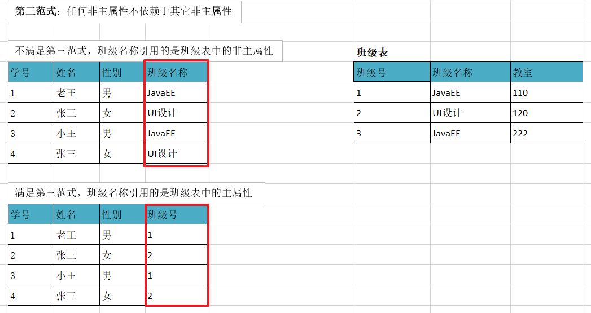
小结
第一范式要求?
表中的字段要不需要再拆分,直接使用
第二范式要求?
- 一张表只描述一件事情或一个实体
- 每张表要添加主键
第三范式要求?
表中的字段引用其他表的主键
数据库约束的概述
目前根据字段的类型可以对数据进行限制，但是这个限制不够全面。
目标
学习数据库约束的作用
数据库约束的作用
对表中的数据进行进一步的限制，保证数据的正确性、有效性和完整性。
约束种类
PRIMARY KEY: 主键约束UNIQUE: 唯一约束NOT NULL: 非空约束DEFAULT: 默认值约束FOREIGN KEY: 外键约束
小结
数据库约束的作用？
对表中的数据进行进一步的限制，保证数据的正确性、有效性和完整性。
主键约束(重要)
目标
- 学习主键约束的作用
- 学习添加和删除主键约束
为什么需要主键约束
有些记录的 name，age，score 字段的值都一样时，那么就没法区分这些数据,造成数据库的记录不唯一，这样就不方便管理数据。


每张表都应该有一个主键，并且每张表只能有一个主键。
主键的作用
用来区分表中的数据
哪个字段作为表的主键
通常不用业务字段作为主键，单独给每张表设计一个id的字段，把id作为主键。主键是给数据库和程序使用的，不是给最终的客户使用的。所以主键有没有含义没有关系，只要不重复，非空就行。
创建主键
主键：PRIMARY KEY
主键的特点：
- 主键必须唯一的值
- 主键不能包含NULL值
创建主键方式
在创建表的时候给字段添加主键
CREATE TABLE 表名 ( 字段名 字段类型 PRIMARY KEY, 字段名 字段类型 );在已有表中添加主键(不常用)
ALTER TABLE 表名 ADD PRIMARY KEY (字段名);具体操作：
- 创建表学生表st5, 包含字段(id, name, age)将id做为主键
CREATE TABLE st5 (
id INT PRIMARY KEY, -- id是主键
NAME VARCHAR(20),
age INT
);
- 添加数据
INSERT INTO st5 (id, NAME) VALUES (1, '唐伯虎');
INSERT INTO st5 (id, NAME) VALUES (2, '周文宾');
INSERT INTO st5 (id, NAME) VALUES (3, '祝枝山');
INSERT INTO st5 (id, NAME) VALUES (4, '文征明');- 插入重复的主键值
-- 主键是唯一的不能重复：Duplicate entry '1' for key 'PRIMARY'
INSERT INTO st5 (id, NAME) VALUES (1, '文征明2');- 插入NULL的主键值
-- 主键是不能为空的：Column 'id' cannot be null
INSERT INTO st5 (id, NAME) VALUES (NULL, '文征明3');删除主键
ALTER TABLE 表名 DROP PRIMARY KEY;具体操作：
- 删除st5表的主键
ALTER TABLE st5 DROP PRIMARY KEY;
小结
说出主键约束的作用？
用来区分每条数据
主键的特点？
1.唯一
2.非空
添加和删除主键？
创建表时添加主键
CREATE TABLE 表名 (
字段名 字段类型 PRIMARY KEY,
字段名 字段类型
);在已有表上添加主键
ALTER TABLE 表名 ADD PRIMARY KEY (字段名);删除主键
ALTER TABLE 表名 DROP PRIMARY KEY;主键自增(重要)
目标
学习主键为自动增长
主键让我们自己添加很有可能重复，我们通常希望在每次插入新记录时，数据库自动生成主键字段的值
字段名 字段类型 PRIMARY KEY AUTO_INCREMENTAUTO_INCREMENT 表示自动增长(字段类型必须是数值类型)
具体操作：
- 创建学生表st6, 包含字段(id, name, age)将id做为主键并自动增长
CREATE TABLE st6 (
id INT PRIMARY KEY AUTO_INCREMENT,
NAME VARCHAR(20),
age INT
);- 插入数据
-- 主键默认从1开始自动增长
INSERT INTO st6 (NAME, age) VALUES ('唐僧', 22);
INSERT INTO st6 (NAME, age) VALUES ('孙悟空', 26);
INSERT INTO st6 (NAME, age) VALUES ('猪八戒', 25);
INSERT INTO st6 (NAME, age) VALUES ('沙僧', 20);
扩展
默认地AUTO_INCREMENT 的开始值是1，如果希望修改起始值，请使用下列SQL语法
ALTER TABLE st6 AUTO_INCREMENT = 10000;DELETE和TRUNCATE的区别
- DELETE 删除表中的数据，但不重置AUTO_INCREMENT的值。

- TRUNCATE 摧毁表，重建表，AUTO_INCREMENT重置为1

小结
设置主键为自动增长格式？
字段名 字段类型 PRIMARY KEY AUTO_INCREMENT
唯一约束
目标
- 学习唯一约束的作用
- 学习添加唯一约束
唯一约束的作用
让字段的值唯一，不能重复
唯一约束的格式
CREATE TABLE 表名 (
字段名 字段类型 UNIQUE,
字段名 字段类型
);具体步骤：
- 创建学生表st7, 包含字段(id, name)，name这一列设置唯一约束，不能出现同名的学生
CREATE TABLE st7 (
id INT,
NAME VARCHAR(20) UNIQUE
);- 添加一些学生
INSERT INTO st7 VALUES (1, '貂蝉');
INSERT INTO st7 VALUES (2, '西施');
INSERT INTO st7 VALUES (3, '王昭君');
INSERT INTO st7 VALUES (4, '杨玉环');
-- 插入相同的名字出现name重复: Duplicate entry '貂蝉' for key 'name'
INSERT INTO st7 VALUES (5, '貂蝉');
-- 出现多个null的时候会怎样？因为null是没有值，所以不存在重复的问题
INSERT INTO st3 VALUES (5, NULL);
INSERT INTO st3 VALUES (6, NULL);小结
说出唯一约束的作用？
这个字段的值不能重复
添加唯一约束格式？
CREATE TABLE 表名 ( 字段名 字段类型 UNIQUE, 字段名 字段类型 );
非空约束
目标
- 学习非空约束的作用
- 学习添加非空约束
非空约束的作用
让这个字段的值不能为空
非空约束的语法格式
CREATE TABLE 表名 (
字段名 字段类型 NOT NULL,
字段名 字段类型
);具体操作：
- 创建表学生表st8, 包含字段(id,name,gender)其中name不能为NULL
CREATE TABLE st8 (
id INT,
NAME VARCHAR(20) NOT NULL,
gender CHAR(2)
);- 添加一些完整的记录
INSERT INTO st8 VALUES (1, '郭富城', '男');
INSERT INTO st8 VALUES (2, '黎明', '男');
INSERT INTO st8 VALUES (3, '张学友', '男');
INSERT INTO st8 VALUES (4, '刘德华', '男');
-- 姓名不赋值出现姓名不能为null: Column 'name' cannot be null
INSERT INTO st8 VALUES (5, NULL, '男');
小结
非空约束的格式:
CREATE TABLE 表名 (
字段名 字段类型 NOT NULL,
字段名 字段类型
);扩展: 主键唯一和非空，普通的字段我们也可以添加唯一和非空,有区别吗?
1.一张表中只能有一个主键
2.一张表中可以有多个唯一和非空普通字段
3.主键才能自动增长，普通的字段不能自动增长默认值
目标
- 学习默认值的作用
- 学习给字段添加默认值
默认值的作用
如果这个字段不设置值，就使用默认值。
默认值格式
CREATE TABLE 表名 (
字段名 字段类型 DEFAULT 值,
字段名 字段类型
);具体步骤：
- 创建一个学生表 st9，包含字段(id,name,address)， 地址默认值是广州
CREATE TABLE st9 (
id INT,
NAME VARCHAR(20),
address VARCHAR(50) DEFAULT '广州'
);- 添加一条记录，使用默认地址
INSERT INTO st9 (id, NAME) VALUES (1, '刘德华');
- 添加一条记录,不使用默认地址
INSERT INTO st9 VALUES (2, '张学友', '香港');小结
说出默认值的作用？
这个字段不添加值就使用默认值
给字段添加默认值格式？
CREATE TABLE 表名 ( 字段名 字段类型 DEFAULT 值, 字段名 字段类型 );
外键约束(重要)
目标
学习外键的概念
学习创建外键约束
准备部门表和员工表的数据
-- 创建部门表
CREATE TABLE department (
id INT PRIMARY KEY AUTO_INCREMENT,
dep_name VARCHAR(20),
dep_location VARCHAR(20)
);
-- 创建员工表
CREATE TABLE employee (
id INT PRIMARY KEY AUTO_INCREMENT,
NAME VARCHAR(20),
age INT,
dep_id INT
);
-- 添加2个部门
INSERT INTO department (dep_name, dep_location) VALUES ('研发部', '广州'), ('销售部', '深圳');
-- 添加员工,dep_id表示员工所在的部门
INSERT INTO employee (NAME, age, dep_id) VALUES
('张三', 20, 1),
('李四', 21, 1),
('王五', 20, 1),
('老王', 20, 2),
('大王', 22, 2),
('小王', 18, 2);问题：
当我们在employee的dep_id里面输入不存在的部门，数据依然可以添加，但是并没有对应的部门，不能出现这种情况。employee的dep_id中的内容只能是department表中存在的id
需要达到目的:需要约束dep_id只能是department表中已经存在id
解决方式: 使用外键约束
什么是外键
一个表中的某个字段引用其他表的主键，这个字段称为外键
主表： 主键所在的表，约束别人的表，将数据给别人用
副表/从表： 外键所在的表，被约束的表，使用别人的数据
创建外键约束
新建表时增加外键约束：
CREATE TABLE 表名 ( 字段名 字段类型, 字段名 字段类型, -- 添加外键约束 [CONSTRAINT 外键约束名] FOREIGN KEY(外键字段名) REFERENCES 主表(主键字段名) );关键字解释：
CONSTRAINT: 表示约束外键约束名： 给外键约束取个名字,将来通过约束名可以删除这个约束
FOREIGN KEY(外键字段名): 指定某个字段作为外键
REFERENCES 主表(主键字段名) : 引用主表的主键的值
已有表增加外键约束：
ALTER TABLE 从表 ADD CONSTRAINT 外键约束名称 FOREIGN KEY (外键字段名) REFERENCES 主表(主键字段名);具体操作：
- 副表/从表: 被别人约束，表结构添加外键约束
- 删除副表/从表 employee
- 创建从表 employee 并添加外键约束
CREATE TABLE employee (
id INT PRIMARY KEY AUTO_INCREMENT,
NAME VARCHAR(20),
age INT,
dep_id INT,
-- 添加一个外键
-- 外键取名公司要求,一般fk结尾
CONSTRAINT emp_depid_ref_dep_id_fk FOREIGN KEY(dep_id) REFERENCES department(id)
);- 正常添加数据
INSERT INTO employee (NAME, age, dep_id) VALUES
('张三', 20, 1),
('李四', 21, 1),
('王五', 20, 1),
('老王', 20, 2),
('大王', 22, 2),
('小王', 18, 2);- 部门错误的数据添加失败
INSERT INTO employee (NAME, age, dep_id) VALUES ('二王', 20, 5);删除外键约束
ALTER TABLE 表名 DROP FOREIGN KEY 外键约束名;具体操作：
- 删除employee表的emp_depid_ref_dep_id_fk外键
ALTER TABLE employee DROP FOREIGN KEY emp_depid_ref_dep_id_fk;- 在employee表情存在况下添加外键
ALTER TABLE employee ADD CONSTRAINT emp_depid_ref_dep_id_fk FOREIGN KEY(dep_id) REFERENCES department(id);小结
什么是外键?
表中的字段值引用另一张表的主键的值.,这个字段就是外键
外键约束有什么好处
保证这个外键的值不能乱写,必须是引用已经存在的数据
创建外键约束格式？
创建表时添加外键约束CREATE TABLE 表名 ( 字段名 字段类型, 字段名 字段类型, [CONSTRAINT 外键约束名] FOREIGN KEY (外键字段名) REFERENCES 主表(主键) );在已有表基础上增加外键约束
ALTER TABLE 表名 ADD [CONSTRAINT 外键约束名] FOREIGN KEY (外键字段名) REFERENCES 主表(主键);删除外键约束格式？
ALTER TABLE 表名 DROP FOREIGN KEY 外键约束名;
外键的级联
目标
了解外键的级联操作
有了外键约束后能直接修改和删除数据吗?
要把部门表中的id值2，改成5，能不能直接修改呢？
UPDATE department SET id=5 WHERE id=2;不能直接修改:Cannot delete or update a parent row: a foreign key constraint fails 如果副表(员工表)中有引用的数据，不能直接修改主表(部门表)主键
要删除部门id等于1的部门, 能不能直接删除呢？
DELETE FROM department WHERE id = 1;不能直接删除:Cannot delete or update a parent row: a foreign key constraint fails 如果副表(员工表)中有引用的数据，不能直接删除主表(部门表)数据
什么是级联操作
在修改和删除主表的主键时，同时更新或删除从表的外键值，称为级联操作ON UPDATE CASCADE ：级联更新 主表主键修改后，从表的数据也跟着修改ON DELETE CASCADE ：级联删除 主表主键删除后，从表数据也跟着删除
具体操作：
- 删除employee表
- 重新创建employee表，添加级联更新和级联删除
CREATE TABLE employee (
id INT PRIMARY KEY AUTO_INCREMENT,
NAME VARCHAR(30),
age INT,
dep_id INT,
-- 添加外键约束,并且添加级联更新和级联删除
CONSTRAINT employee_dep_fk FOREIGN KEY (dep_id) REFERENCES department(id) ON UPDATE CASCADE ON DELETE CASCADE
);- 再次添加数据到员工表和部门表
INSERT INTO employee (NAME, age, dep_id) VALUES ('张三', 20, 1);
INSERT INTO employee (NAME, age, dep_id) VALUES ('李四', 21, 1);
INSERT INTO employee (NAME, age, dep_id) VALUES ('王五', 20, 1);
INSERT INTO employee (NAME, age, dep_id) VALUES ('老王', 20, 2);
INSERT INTO employee (NAME, age, dep_id) VALUES ('大王', 22, 2);
INSERT INTO employee (NAME, age, dep_id) VALUES ('小王', 18, 2);- 把部门表中id等于1的部门改成id等于10
UPDATE department SET id=10 WHERE id=1;
- 删除部门号是2的部门
DELETE FROM department WHERE id=2;
小结
级联更新：ON UPDATE CASCADE 当主表的主键更新时,从表的外键值跟着更新
级联删除：ON DELETE CASCADE 当主表的主键删除时,从表的数据跟着删除
表关系的概念
目标
学习表之间的3种关系
现实生活中，实体与实体之间肯定是有关系的，比如：老公和老婆，部门和员工，老师和学生等。那么我们在设计表的时候，就应该体现出表与表之间的这种关系！分成三种：
- 一对一
- 一对多
- 多对多
介绍
一对多
例如：班级和学生，部门和员工，客户和订单
一对多建表原则: 在从表(多方)创建一个字段，字段作为外键指向主表(一方)的主键
多对多
例如：老师和学生，学生和课程
多对多关系建表原则: 需要创建第三张表，中间表中至少两个字段，这两个字段分别作为外键指向各自一方的主键。
一对一
在实际的开发中应用不多，因为一对一可以创建成一张表。
两种建表原则：
- 外键唯一：主表的主键和从表的外键（唯一），形成主外键关系，外键唯一
UNIQUE - 外键是主键：主表的主键和从表的主键，形成主外键关系
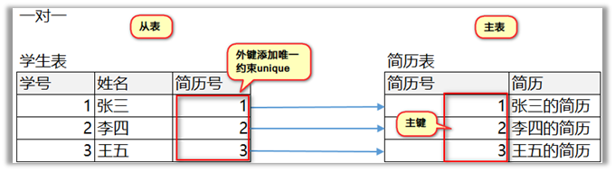
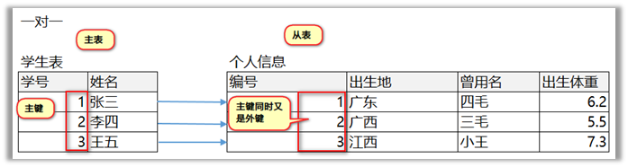
代码实现
一对一
CREATE TABLE stu (
id INT PRIMARY KEY,
NAME VARCHAR(20)
);
-- 创建个人信息表：从表
CREATE TABLE info (
id INT PRIMARY KEY, -- 主键
address VARCHAR(50),
use_name VARCHAR(20),
weight DOUBLE,
-- 创建外键约束
FOREIGN KEY (id) REFERENCES stu(id)
);效果图
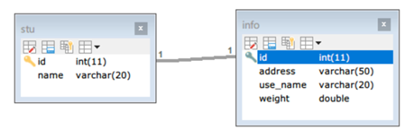
一对多
需求：一个旅游线路分类中有多个旅游线路
表与表的关系
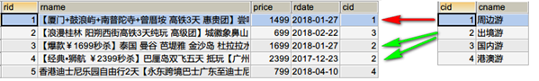
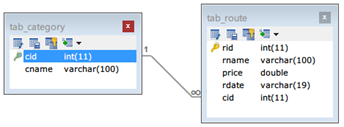
具体操作
-- 创建旅游线路分类表tab_category
/*
cid 旅游线路分类主键，自动增长
cname 旅游线路分类名称非空，唯一，字符串100
*/
CREATE TABLE tab_category (
cid INT PRIMARY KEY AUTO_INCREMENT,
cname VARCHAR(100) NOT NULL UNIQUE
);
-- 创建旅游线路表tab_route
/*
rid 旅游线路主键，自动增长
rname 旅游线路名称非空，唯一，字符串100
price 价格
rdate 上架时间，日期类型
cid 外键，所属分类
*/
CREATE TABLE tab_route (
rid INT PRIMARY KEY AUTO_INCREMENT,
rname VARCHAR(100) NOT NULL UNIQUE,
price DOUBLE,
rdate DATE,
cid INT, -- 外键
FOREIGN KEY (cid) REFERENCES tab_category(cid)
);多对多
需求：一个用户收藏多个线路，一个线路被多个用户收藏
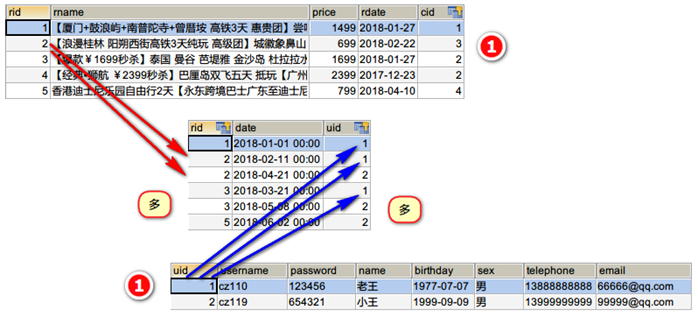
对于多对多的关系我们需要增加一张中间表来维护他们之间个关系
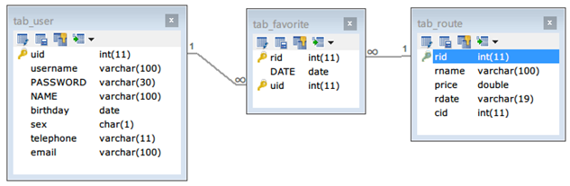
具体操作
/*
创建用户表tab_user
uid用户主键，自增长
username用户名长度100，唯一，非空
password密码长度30，非空
name真实姓名长度100
birthday生日
sex性别，定长字符串1
telephone手机号，字符串11
email邮箱，字符串长度100
*/
create table tab_user(
uid int primary key auto_increment,
username varchar(100) unique not null,
password varchar(30) not null,
name varchar(100),
birthday date,
sex char(1),
telephone varchar(11),
email varchar(100)
);
/*
创建收藏表tab_favorite
rid 旅游线路id，外键
date 收藏时间
uid用户id，外键
rid和uid不能重复，设置复合主键，同一个用户不能收藏同一个线路两次
*/
create table tab_favorite(
rid int, -- 线路外键
`date` date,
uid int, -- 用户外键
primary key(rid,uid), -- 创建复合主键
foreign key (rid) references tab_route(rid),
foreign key (uid) references tab_user(uid)
);小结
多表之间的3种关系
一对多: 部门和员工,一个部门对应多个员工
多对多: 学生和课程 一个学生对应多个课程,一个课程会对应多个学生
一对一: 学生和个人信息, 一个学生对应一个个人信息
总结
能够使用SQL语句添加主键、外键、唯一、非空约束
主键: 字段名 字段类型 PRIMARY KEY AUTO_INCREMENT
唯一: 字段名 字段类型 UNIQUE
非空约束: NOT NULL
外键: [CONSTRAINT 外键约束名] FOREIGN KEY(外键字段名) REFERENCES 主表(主键)
能够使用聚合函数
COUNT: 统计这列数量
SUM: 统计这列总和
MAX: 统计这列最大值
MIN: 统计这列最小值
AVG: 统计这列平均值
能够使用SQL语句进行分组查询
SELECT 字段名 FROM 表名 GROUP BY 字段名;
能够理解三大范式
第一范式: 表中的字段不需要再拆分,可以直接使用
第二范式: 1.一张表描述一个实体 2.每张表要添加主键
第三范式: 表中的字段要引用其他表的主键(外键)